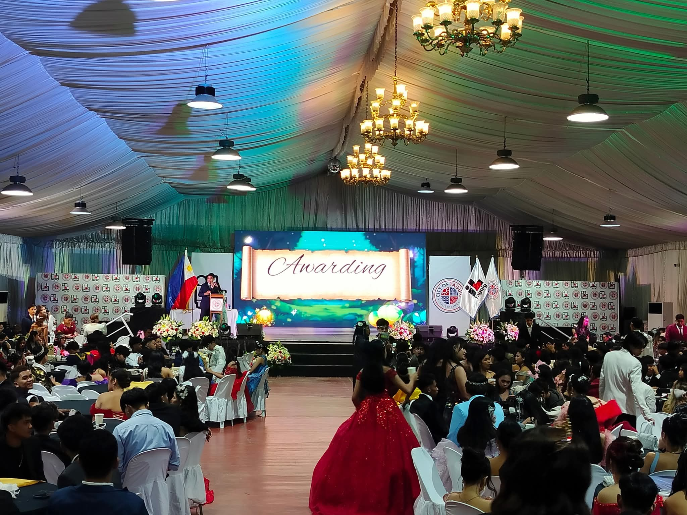
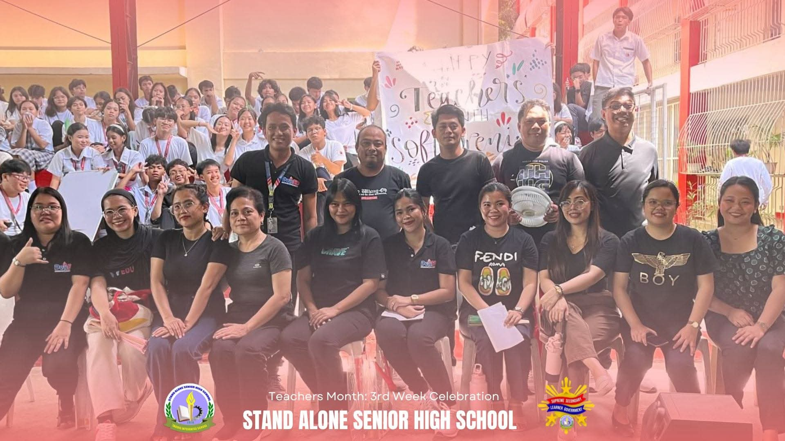
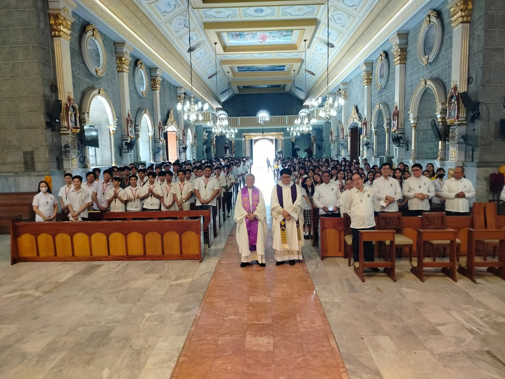
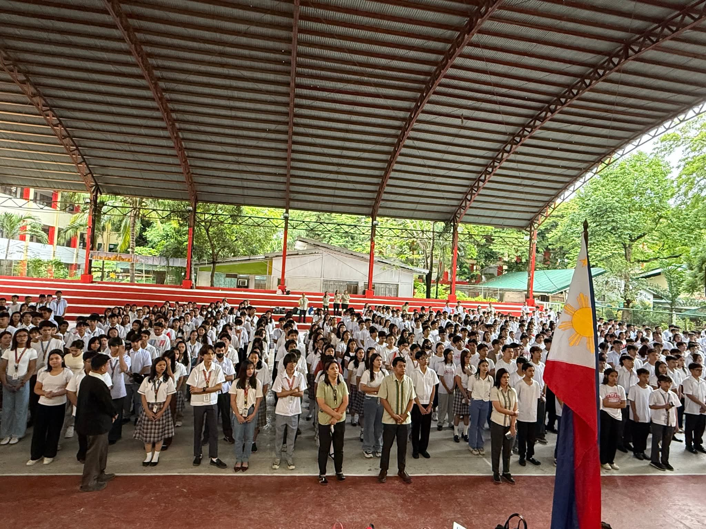

<html><head><title>HANDSON3.html</title></head></html>
<body bgcolor="#c4a9a0">
  <br>
  <h1><center>STAND ALONE SENIOR HIGHSCHOOL-TIS</h1></center>
  <hr color="black" size="5" width="50%">
  <font face="chiller" color="red"><center><a href="index.html">HOME</a>&nbsp&nbsp&nbsp&nbsp&nbsp&nbsp&nbsp&nbsp<a href="index3.html"></a>&nbsp&nbsp&nbsp&nbsp&nbsp&nbsp&nbsp&nbsp&nbsp&nbsp<a href="Calendar.html">CALENDAR</a>

    <hr color="black" size="5" width="50%">
    <br>
    <table border="0" width="80%"></table>
    <tr>
      <th>DESCRIPTION</th></tr></table></center>
  
  <tr> 
    <th>
    <th></th>&nbsp&nbsp&nbsp&nbsp&nbsp
    <th></th>
      
    </tr></table></center>

<table border="0" width="100%">
<tr>   
  <th><font face="bodoni" color="orange" size="3"></font><b>DESCRIPTION:</b>A Grad Ball is an event at the end of the academic year where students in your School of Study can come together and celebrate in style! Attendees can expect a buffet style meal, music & dancing and the opportunity to socialise with your coursemates.</th>&nbsp&nbsp&nbsp&nbsp&nbs&pnbsp
  <th><font face="bodoni" color="orange" size="3"></font><b>DESCRIPTION:</b>Teachers' Day is a special day for the appreciation of teachers. It may include celebrations to honor them for their special contributions in a particular field area, or the community tone in education.</th>&nbsp&nbsp&nbsp&nbsp&nbsp&nbsp&nbsp&nbsp&nbsp
  <th><font face="bodini" color="orange"  size="3"></font><b>DESCRIPTION:</b>The concept of “Drop Everything and Read” is referenced in the second chapter of Ramona Quimby, Age 8, and Ramona is the campaign spokesperson. On this day, families are encouraged to take at least 30 minutes to put aside all distractions and enjoy books together</th></tr></table>
<br>
<br> 
<table border="1" width="100%"></table>
<tr>
  <th></th>&nbsp&nbsp&nbsp&nbsp&nbsp
  <th></th>&nbsp&nbsp&nbsp&nbsp&nbsp
  <th></th></tr></table></center>

<table border="0" width="100%">
  <tr>
      <th><font face="bodoni" color="orange" size="3"></font><b>DESCRIPTION:</b>It signals the end of the official duty day and serves as a ceremony for paying respect to the flag. It is a way of showing love and respect for one's country. The Ceremony. Singing of the Philippine National Anthem</th>
      <th><font face="bodoni" color="orange" size="3"></font><b>DESCRIPTION:</b>Mass. A Whole-School Celebration. As a Catholic school, comprised of both practicing and non-practicing Catholics, member of other Christian denominations, and other faith communities</th>
      <th><font face="bodoni" color="orange" size="3"></font><b>DESCRIPTION:</b>A Whole-School Celebration. As a Catholic school, comprised of both practicing and non-practicing Catholics, member of other Christian denominations, and other faith communities,</th></tr></table>
<br>
<br>  
<br>  
<hr color="black">

   <center><h3>Rylan Felix G.Evangelista</h2></center>
   <centet><h3>11-PRODUCTION</h3></center>
    
    
    
    
    
    
    
    
    
    
    
    
    
    
    
    
    
    
    
    
    
    
    
    
    
    
    
    
    
    
    
    
    
    
    
    
    
    
    
    